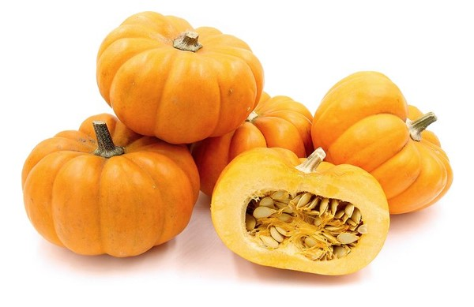

1. Seasons for Growing Pumpkins

Pumpkins are warm-season crops that require a long growing period. Here’s how to manage its growing seasons:
- Spring: Start seeds indoors 2-4 weeks before the last frost date. Transplant seedlings outdoors once temperatures are consistently above 70°F (21°C).
- Summer: Pumpkins grow rapidly in summer. Ensure consistent watering and space plants adequately to allow for their large size.
- Fall: Harvest pumpkins in the fall before the first frost. They should be mature and have a hard rind before harvesting.